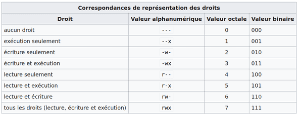

CH3 : Systèmes d'exploitation⚓︎
Programme officiel
1. Qu'est ce qu'un système d'exploitation ?⚓︎
Un système d’exploitation (OS pour "opérating system"  ) est un logiciel, ou ensemble de programmes, qui sert d’interface entre les programmes exécutés par l’utilisateur et les ressources matérielles d’un ordinateur.
) est un logiciel, ou ensemble de programmes, qui sert d’interface entre les programmes exécutés par l’utilisateur et les ressources matérielles d’un ordinateur.
Il est à la fois :
- une machine virtuelle qui présente une interface simplifiée d’accès aux ressources (processeur, mémoire, périphériques d’entrée/sortie, réseau …) pour les autres programmes et pour l’utilisateur
- un chef d’orchestre et un administrateur :
- c’est le premier programme exécuté au démarrage de l’ordinateur
- il gère l’accès concurrent aux ressources par les différents programmes (ordonnancement de l’utilisation du processeur par les programmes en cours d’exécution ou processus, sécurisation de la mémoire) ou utilisateurs (droits d’accès du système de fichiers).
À retenir
Le système d'exploitation est l'ensemble des programmes qui permet aux autres programmes d'interagir avec les ressources matérielles (processeur, mémoire, périphériques d'entrée / sortie) sur un ordinateur. Il sert donc d'intermédiaire entre le matériel et le logiciel et assure la coordination, la sécurité et la stabilité d'un environnement partagés par plusieurs programmes et plusieurs utilisateurs.
Les deux familles de systèmes d'exploitation les plus populaires sont Unix (dont macOS, GNU/Linux, iOS et Android) et Windows.
- Windows est principalement utilisé sur les PC de bureau, c'est un système d'exploitation propriétaire tout comme MacOS.
- Linux au contraire est un système d'exploitation libre, il est principalement utilisé dans les serveurs, téléphones portables via Android et les supercalculateurs.
Comme nous avons au lycée un système d'exploitation Windows et que le programme officiel demande de travailler sous Linux, vous pouvez passer les commandes de ce chapitre directement dans le navigateur grâce à l'émulateur de système mis au point par Fabrice Bellard accessible à l'adresse :
https://bellard.org/jslinux/vm.html?url=alpine-x86.cfg&mem=192
2. Système de fichier de Linux⚓︎
2.1 Arborescence⚓︎
Avec Linux , comme dans Windows, les données sont stockées dans des fichiers (file :gb), eux-mêmes contenus dans des dossiers appellés répertoires (directory ).
Contrairement à Windows, sous Linux, la notion de "disque" n'existe pas. L'organisation des répertoires et fichiers est appellée arborescence.
Sous Linux, tout est fichier. Ils sont organisés suivant une unique arborescence dont la racine est nommée /.
Les répertoires nécessaires au fonctionnement du sytème d'exploitation sont etc, dev, tmp .... Les répertoires des utilisateurs sont situés dans le répertoire home
2.2 Chemin d'un fichier⚓︎
Pour localiser un fichier dans cette arborescence on doit définir le chemin d'accès au fichier.
a. Chemin absolu⚓︎
À savoir
Le chemin absolu d'un fichier est part toujours du répertoire racine : / suivi du ou des nom(s) de répertoire(s) jusqu'à la destination, séparé par des symboles /.
Exemple : Dans l'arborescence ci-dessous, le chemin absolu du fichier fibonacci.py est /home/frederic/programmes/fibonacci.py
Attention Linux est sensible à la casse : majuscules, minuscules, espaces ...
b. Chemin relatif⚓︎
À savoir
Lorsqu'on se déplace dans le système de fichier, le répertoire dans lequel on se trouve s'appelle le répertoire courant. Un chemin relatif part du répertoire courant et donne la liste des noms du ou des répertoire(s) jusqu'à la destination, séparés par des /.
Dans un chemin relatif . signifie répertoire (ou nœud) courant, .. signifie répetoire (ou nœud) parent, ~ signifie répertoire personnel.
Exemples : Dans l'arborescence précédente, si on est dans son répertoire personnel frederic, le chemin relatif du fichier fibonacci.py est ./fibonacci.py. Par contre, si on se situe dans le répertoire images, le chemin relatif du fichier fibonacci.py est ../programmes/fibonacci.py.
3. Interface utilisateur d’un système d’exploitation⚓︎
3.1 Le shell⚓︎
Une interface entre l’utilisateur et le système d’exploitation s’appelle un shell ou interpréteur de commandes.
Le rôle d’un shell est de prendre une entrée de l’utilisateur, de la traduire en instructions compréhensibles par le système d’exploitation et de renvoyer la réponse du système à l’utilisateur.
Il existe deux grandes catégories de shell :
- les interfaces textuelles comme bash, le plus commun sur les systèmes de la famille UNIX.
- les interfaces graphiques qu’on retrouve dans les systèmes d’exploitation grand public tels que Windows
3.2 Invite de commande et commandes⚓︎
On appelle Invite de commande le message qui « invite » à entrer une commande dans la console/terminal.
Exemple :
toto@pc12_lycee:~$
toto@pc_lycee désigne le nom de l'utilisateur toto sur la machine nommée pc12_lycee. Le signe ~ signifie que l'on se trouve dans le répertoire personnel de l'utilisateur toto.
Le symbole dollar $ final signifie que l’utilisateur toto n’est pas l’administrateur de la machine. Lorsqu’on utilise la machine en tant qu’administrateur, appelé root sous UniX, le symbole terminal est #.
La syntaxe d'une ligne commande est : nom de la commande suivi éventuellement d'-options et d'arguments.
Exemple :
toto@pc12_lycee:~$ rm -r ./Documents/Dossier_secret
La commande est rm. On a une option -r et un argument ./Documents/Dossier_secret. Cela signifie que l'on veut supprimer le répertoire Dossier_secret et tout ce qu'il contient.
3.3 Commandes de base Linux⚓︎
On prendra pour exemple l'arborescence de fichier ci-dessous pour illustrer nos exemples. On est l'utilisateur sophie.
a. Naviger dans le système de fichiers⚓︎
- pwd (print working directory) : Affiche le nom du répertoire courant.
- ls (list) : Permet d'afficher le contenu d'un répertoire.
- cd destination (change directory) : permet de changer de répertoire courant.
Exemple :
sophie@ma_machine:~$ pwd
/home/sophie
sophie@ma_machine:~$ ls
images
sophie@ma_machine:~$ cd ./images
sophie@ma_machine:images$ ls
noel2018 photo2.jpg
b. Créer des répertoires⚓︎
- mkdir nom_repertoire (make directory) : crée un répertoire
nom_repertoire.
Exemple :
sophie@ma_machine:images$ mkdir vacances2022
sophie@ma_machine:images$ ls
noel2018 vacances2022 photo2.jpg
c. Déplacer / Copier des fichiers⚓︎
- mv source destination (move) : déplace ou renomme le fichier ou repertoire
sourceendestination. - cp source destination (copy) : copie le fichier ou répertoire
sourcevers ladestination.
Exemple :
sophie@ma_machine:images$ mv photo2.jpg ./vacances2022/montagne.jpg
sophie@ma_machine:images$ ls
noel2018 vacances2022
sophie@ma_machine:images$ cd ./vacances2022
sophie@ma_machine:vacances2022$ ls
montagne.jpg
sophie@ma_machine:vacances2022$ cp ../noel2018/photo1.jpg ./
sophie@ma_machine:vacances2022$ ls
montagne.jpg photo1.jpg
d. Supprimer des fichiers et des répertoires⚓︎
- rm chemin/nom_fichier (remove) : supprime le fichier
nom_fichier. - rm -r chemin/nom_repertoire : supprime le répertoire
nom_repertoireet tout ce qu'il contient.
Exemple :
sophie@ma_machine:vacances2022$ rm -r ../noel2018
sophie@ma_machine:vacances2022$ cd ..
sophie@ma_machine:image$ cd ./noel2018
bash: cd: ./noel2018 No such file or directory
e. D'autres commandes utiles⚓︎
- man nom_commande (manual) : accés à la documentation de la commande
nom_commande. - clear (clear) : efface le contenu du terminal.
- history (history) : affiche l'historique des commandes passées.
4. Droits et permissions⚓︎
4.1 Utilisateurs et groupes sous Linux⚓︎
Un système Linux peut être utilisé par plusieurs utilisateurs. Un utilisateur est identifié sur une machine par un identifiant (user id ) et possède un espace de travail personnel avec un répertoire courant.
Tous les utilisateurs n'ont pas forcément les mêmes droits d'accès et les mêmes permissions d'accès aux fichiers et répertoires de la machine. Les droits et permissions sont gérés par le système d'exploitation.
- L'administrateur ou Le super utilisateur (super user ) appellé root a accès à tous les fichiers et répertoires du système. Il a tous les droits. La commande sudo (Super-User DO) permet d'exécuter une commande en mode root dans un Terminal. Pour que la commande puisse être passée, il faut alors taper le mot de passe administrateur.
- Le propriétaire d'un fichier est l'utilisateur qui l'a créé. Le propriétaire d'un fichier ou d'un répertoire peut modifier les droits. Le super utilisateur peut également le faire et il peut même changer le propriétaire.
- Chaque utilisateur appartient à un ou plusieurs groupes. Ces groupes permettent de rassembler les utilisateurs qui ont les même droits.
4.2 Droits des répertoires et fichiers⚓︎
Chaque fichier et chaque répertoire possède une liste de droits : c’est une liste qui indique qui a le droit de lire le fichier (read ), de le modifier (write ) et de l’exécuter (execute ) ; on y a accès à l’aide de la commande ls -l.
4.3 Gérer les droits⚓︎
Un utilisateur a le droit de faire un chmod (change mode ) sur un fichier ou un répertoire afin de modifier les droits :
- s'il est root ;
- ou s'il est le propriétaire du fichier ou du répertoire en question.
Les options passées à la commande chmod sont indiquées comme ceci :
chmod options modes fichiers
- Pour un fichier :
chmod [u g o a] [+ - =] [r w x] nom_du_fichier - Pour le contenu d'un répertoire (de façon récursive) :
chmod -R [u g o a] [+ - =] [r w x] nom_du_répertoire
Les lettres u g o a designe les types de propriétaires** concernés:
upropriétaire (user)ggroupe (group)oles autres (others)atous (all)
Les lettres + - = désignent les changements d'état: + et - pour ajouter ou retirer un type de droit aux droits courants, et l'opérateur = pour les écraser.
Les lettres r w x désignent les permissions: read, write, execute.
Exemple d'utilisation avec le système de fichier utilisé dans les exemples précédents :
Sophie propriétaire d'un fichier jeu.py situé dans le répertoire NSI. Elle a les droits de lecture, d'écriture et d'execution. Les utilisateurs ,appartenant au même groupe que Sophie, ont les droits de lecture mais ceux de d'écriture et d'execution. Les autres utilisateurs n'ont aucun droits. On peut visualiser ça avec la commande ls -l.
sophie@ma_machine:NSI$ ls -l
total 28
-rwxr----- 1 sophie sophie 2690 15 sept. 10:39 jeu.py
Elle souhaite ajouter les droits d'execution aux personnes faisant partie de son groupe sans leur donner la possibilité de modifier (d'écrire) dans le fichier et uniquement les droits de lecture aux autres.
sophie@ma_machine:NSI$ chmod g+x,o+r jeu.py
sophie@ma_machine:NSI$ ls -l
total 28
-rwxr-xr-- 1 sophie sophie 2690 15 sept. 10:39 jeu.py
4.4 Notation octale⚓︎
Pour modifier toutes les permission d'une seule commande, on utilise la notation octale (On reviendra sur cette partie un peu plus tard dans l'année).
